（封面是一个睡觉的小狗，没有任何含义，只是觉得乖）
前几天
整了台新电脑，把里面 Win10 格式化了，直接装的 Ubuntu 18.04，之后就出现了问题。
总的说来是连不上无线网。有 wlp1s0，但是连不上无线网。所以一直都是通过 USB 网络共享来遨游互联网（
今天下午又搞了三个小时，让我感到最恼火的是 ip link set wlp1s0 up 这个指令的返回是 invalid arguments，着实想不通。
所以我想了个办法
我另一台电脑上有一个 Ubuntu 18.04 的虚拟机，安装使用的镜像和前面那个是一样的。由于我对 VMware 的网络设置进行了一些修改，导致其上不了网。我对我虚拟机上不了网的了解仅仅停留在 它上不了网，再加上之前一直没有心情整，这下刚好n试试到底是不是相同的问题。
之后是普通的两个指令 ip a 和 ifconfig 的返回：
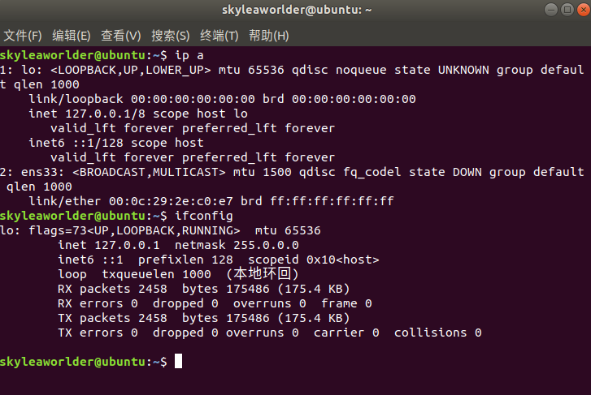
看下 network-manager 这个服务，还是正常的：
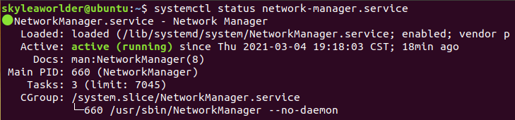
然后我尝试了 sudo ifup ens33：
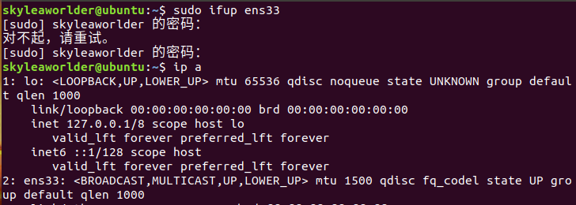
的确是起来了。我也注意到原本的 ens33 就是 state DOWN，而非我那个什么 noop state。所以在这里就已经比我那个物理机要高多了，我那个机器执行了这一步，也还是 noop。
（我也没搜是什么意思）
接下来是
要对 Ubuntu 虚拟机配置，而非物理机。
现在的问题是，它不知道它自己是谁，由于是虚拟机，所以我得按照外面 VMware 的设置来自己配下 ip……
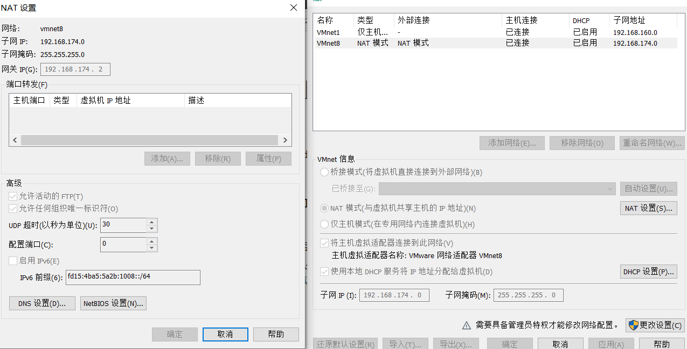
改成这个样子：
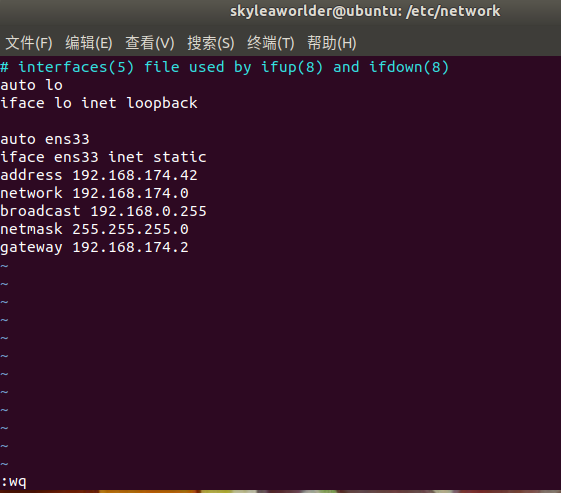
重启服务后就有了，现在看起来十分地正常，那么是表面正常还是真的能用，开一下浏览器就行了：
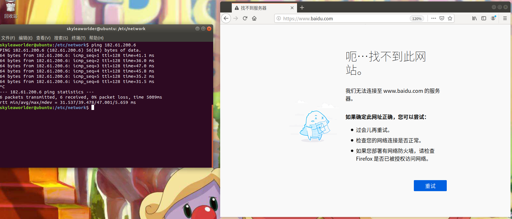
182.61.200.6 是我在学院图书馆 ping www.baidu.com 应该得到的 ip，这里是能 ping，但是无法直接用域名。
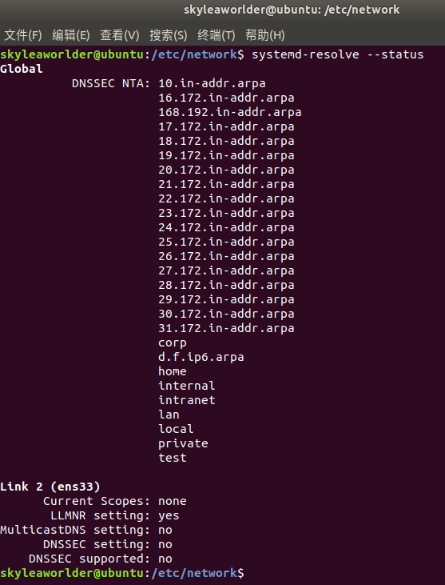
哦，没有 DNS Server 的配置，那我就加一个 8.8.8.8：
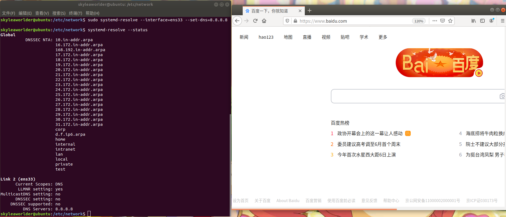
但是
我之后 reboot 了一下，但是发现电脑对 --set-dns=8.8.8.8 这句话一点记性都没有，查看 status 还是看不到 DNS Server。
我也尝试了网上的一些方法，比如手动改 /etc/resolve.conf：
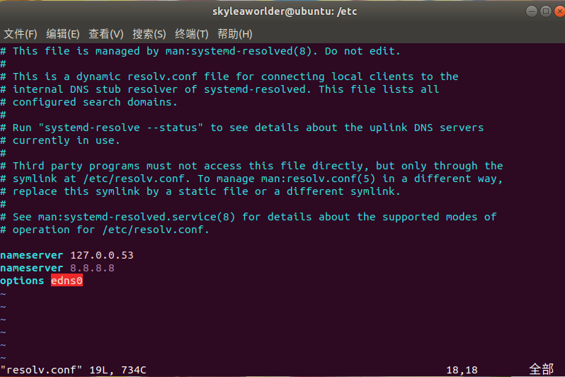
尽管后面又可以正常进行域名解析了：
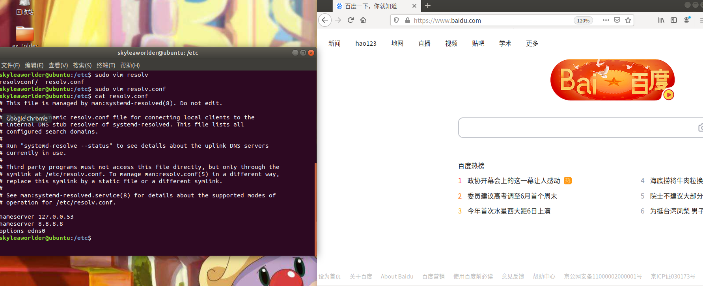
但是在重启之后还是清掉了：
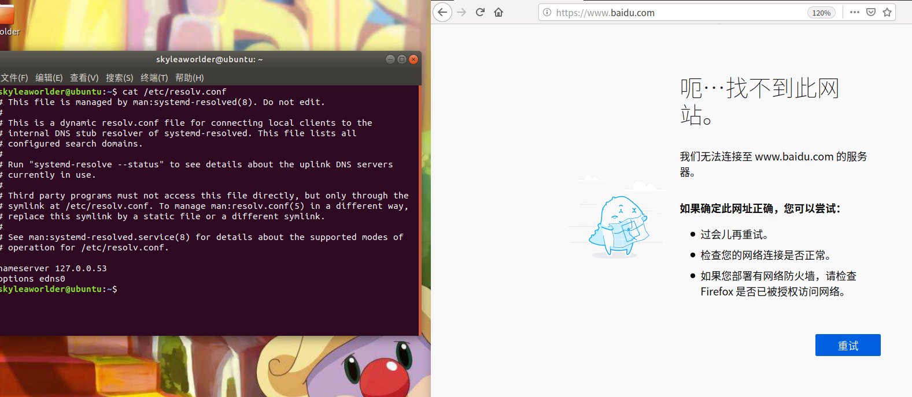
其实
我也知道，不应该这么手动改。
上面都写了，这个文件不建议直接动，它是由 systemd-resolved 动态维护的，想来开机的时候肯定是要重新生成。
我也发现这个 resolve.conf 链到了 /run 的子目录下的一个配置文件，说明它本来就是个运行时文件，我通过命令，或许是可以直接动 systemd-resolved 内部；通过这里修改，或许会触发程序的一个什么什么钩子，然后给我更新 dns server 的列表：
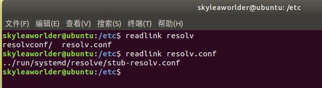
所在的文件夹中，有一个 stub-resolve.conf 和 resolve.conf，就目前来说，两个文件的区别仅仅是少了两行注释，这里就不贴出来了。
在 DNS 那一系列概念里面，stub 正如我高中所学的那点英文中的含义一样，是 “主干，根” 的意思。当我试图通过一个域名进行网站的访问的时候，DNS stub 就会去找 /etc/hosts 里面找对应的 IP，如果没有才去问 DNS Server。
也就是说，这里的两个配置文件是和 DNS stub 以及正经的 DNS 有关的（或许？），我怎么说也不应该自己碰这两个自动生成的东西。
那么现在
改 /etc 下的 resolve.conf 是绝对不可行的，因为它是个运行时文件，只好换其他的思路了。我也在网上搜了许多改 dns 的方法，但大多一看就觉得不靠谱……
今天下午我在倒腾我那个物理机的时候，经常看到一个叫做 systemd 的文件夹，里面好像也有个 resolve.conf。我是今天晚上才知道 resolve.conf 是和 dns 挂钩的（还是因为可以通过 systemd-resolved 来设置 dns server 的 ip）
我就试着改了下这个配置文件：
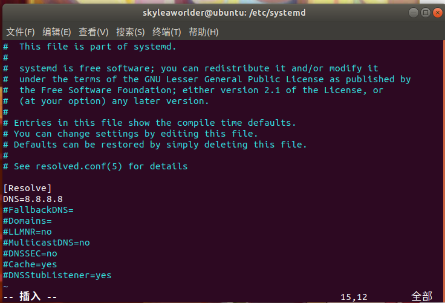
之后通过重启来重启 systemd，然后我就惊了，右上角不知道什么时候冒出来了好久不见的 有线连接 图标，同时我怀着激动的心情打开浏览器，打算开始遨游互联网：

同时看一下我们的 status：
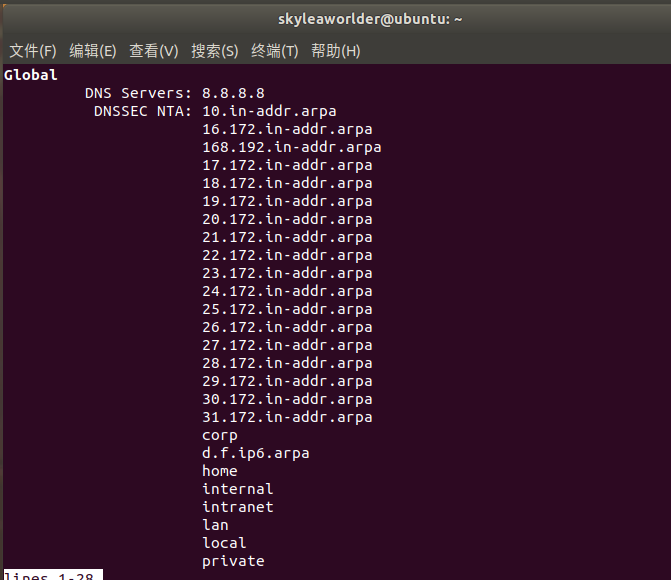
Global 上面直接加了个 DNS Servers: 8.8.8.8 的键值对，这毫无疑问是起飞了。
终于
时隔两个月，我第一次用我的 Ubuntu 虚拟机像个正常人一样上网。
我枯了，宁呢？